POVO BALATIPONÉ-UMUTINA: PRESENTE – PASSADO – FUTURO.
Publicado em 26 de setembro de 2020.
I – HISTÓRIA DE CONTATO DO POVO INDÍGENA BALATIPONÉ-UMUTINA
No passado o povo indígena Balatiponé-Umutina fazia parte da etnia Bororo e que, em determinado momento histórico afastou-se do grupo principal e subiu principalmente o curso do rio Paraguai. Por isso, seu tronco linguístico é Macro-jê, da Família Bororo.
“Índio Bororo”, por Hercules Florence, pintor francês, durante a Expedição Langsdorff à Amazônia (1825 – 1829). Fonte: wikipédia Enciclopédia Livre Disponível em: WIKIPEDIA.
Foto: Vista Google Maps da Terra Umutina e a área do Rio Sepotuba – Cerca de 160km a pé
Conforme o relato dos anciões, as aldeias possuíam cerca de mil indígenas e localizavam na foz do rio Sepotuba, onde possuíam extensos roçados.
Os ciclos econômicos vividos pela cidade de Barra do Bugres e região, foram determinantes para a desestruturação econômica, social e cultural do povo, e redução da população drasticamente.
Encontro do rio Bugres com rio Paraguai, aonde do lado direito da parte de cima é região que localiza a TI Balotiponé-Umutina. Foto Nilson Guedes
Foram constantes os conflitos com os caçadores, poaieiros, madeireiros e garimpeiros que adentravam as matas e rios invadindo o território habitado pelos Balatiponé-Umutina.
Marcio Monzilar Corezomaé – Professor/Mestre da Escola Estadual Julá Paré, 2019.
Foto Monumento em Barra do Bugres em homenagem aos poiaeiros. (2020)
O ciclo econômico da poaia na região do Território Indígena foi conflito econômico, cultural, social e ambiental complexo. Porque se por um lado desenvolvia de forma econômica o município, por outro lado dizimava o povo originário Balotiponé.
*Alessandra Ribeiro de Carvalho
Foto José Louro restaurada por Mario Frielander.
Os Umutina
Fonte: Museu do Índio, RJ (Funai). Os Umutina. Documentário de Harald Schultz.
Disponível em: YouTube, acessado em 20 de Setembro 2019.
Foto: Marechal Cândido Rondon – Fonte: Wikipédia
As instalações dos ramais telégrafos em 1911 na região, ligando a capital, o interior e outros estados, foram comandados pelo Marechal Cândido Mariano da Silva Rondon. Como os Balatiponé-Umutina tornaram-se um empecilho para a realização das obras, Rondon e sua equipe elaboraram planos para a sua “pacificação”.
O processo de pacificação deu-se em etapas, primeiro atraindo os grupos Umutina com brindes (machado, facão, enxada) e mais tarde fixando os mesmos em aldeias.
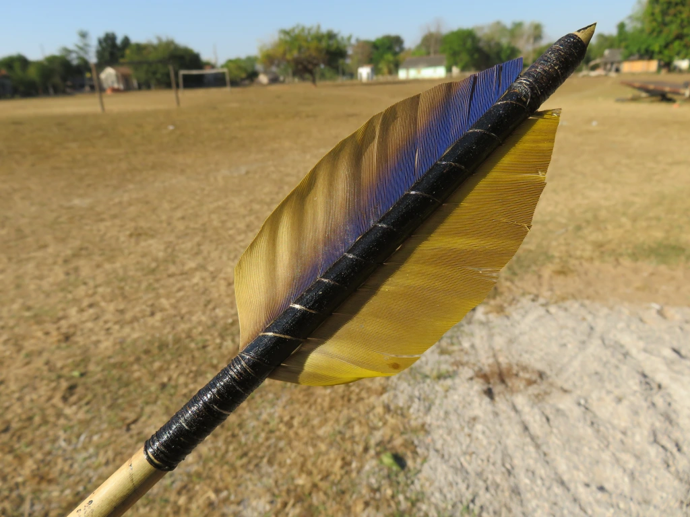
O ritual de boas-vindas Umutina sempre foi usando o arco e a flecha e hoje a aldeia tem os melhores arqueiros indígenas do Brasil. Foto: *Comunidade Indígena Umutina*
Após a pacificação, os Balatiponé-Umutina viveram o momento mais triste de sua história. Pois, o contato permanente com os funcionários do Serviço de Proteção ao Índios (SPI), órgão indigenista da época, resultou na transmissão de doenças, principalmente, sarampo e pneumonia que resultou ainda mais na diminuição populacional e consequentemente ao enfraquecimento da língua, dos costumes tradicionais, enfim, da maneira de ser e viver.
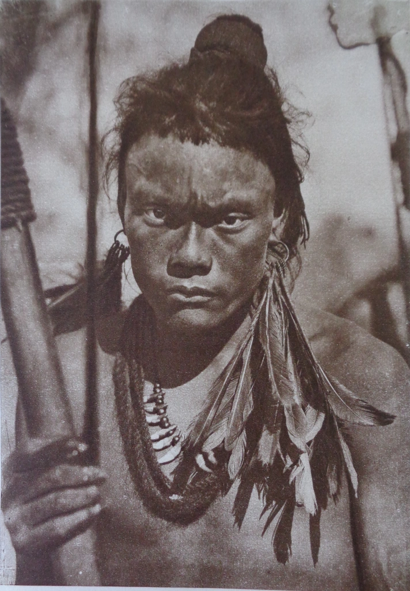
Penas, dentes dos animais de caça, pinturas corporais sempre fizeram parte da cultura Balalitpné. Foto: José Louro restaurada por Mario Friedlander.
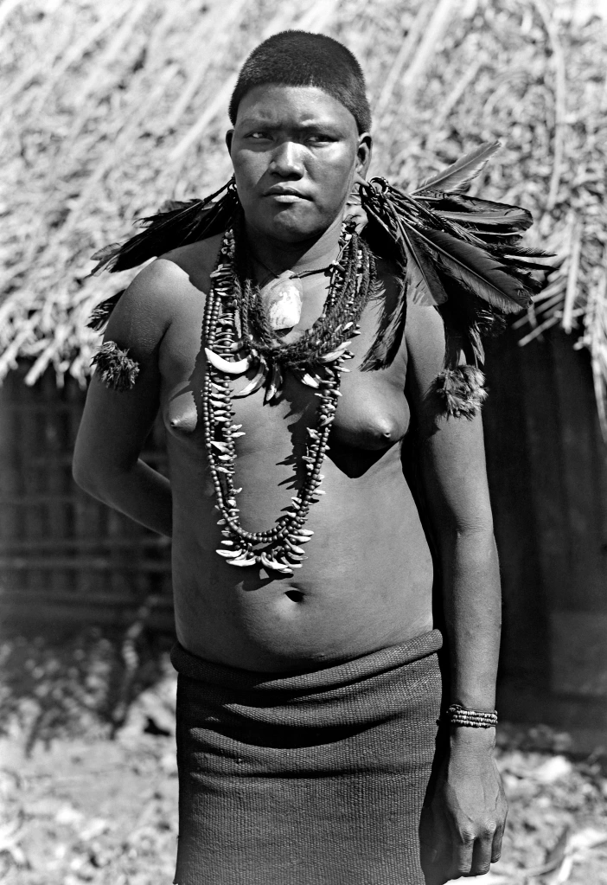
A mulher Umutina usava cabelos curtos, saias confeccionadas com algodão e adornos de plumagem . Foto: José Louro restaurada por Mário Friedlander.
Desse período sobraram apenas quinze bravos guerreiros e guerreiras que não sucumbiram as atrocidades do contato e permaneceram na mata em sua aldeia, cultivando todos os conhecimentos tradicionais. Esta localidade é denominada de Massepô e atualmente foi reconstruída novamente. Nessa aldeia foram coletados grande parte dos elementos da língua e da cultura Balatiponé-Umutina, servindo de referência para as presentes e futuras gerações.
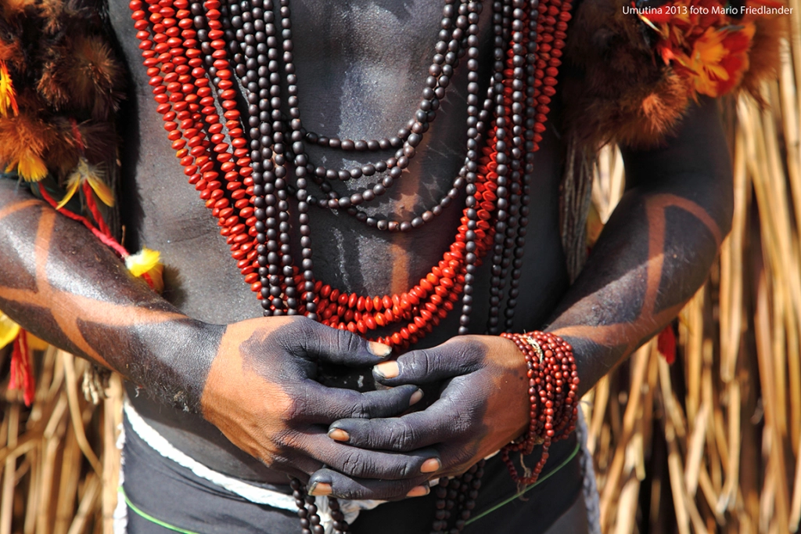
Os trajes usados tanto em rituais, como em apresentações culturais representam uma cultura integrada à natureza. Foto: Mário Friedlander.
Confira aqui o clipe da música HISTÓRIA DO POVO UMUTINA, dirigido por Kamikia Kisedje (AIK Produções) e Marcos Wesley (Som das Aldeias) – CANTOR ADEMILSON. *Texto: Marcio Monzilar Corezomaé – Professor/Mestre da Escola Estadual Julá Paré, 2019.
II CULTURA MATERIAL E IMATERIAL BALATIPONÉ-UMUTINA.
A Cultura material e imaterial do povo Balatiponé-Umutina está ligada diretamente ao seu modo de pensar e conceber a vida, o mundo e o universo. Desta cosmovisão particular, nascem as narrativas míticas que contam sobre a origem do povo, bem como o nascimento de outras etnias e do não índio.
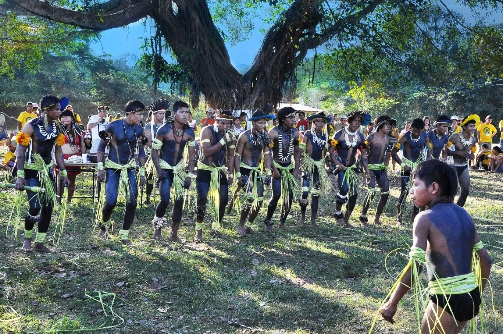
Apresentação cultural Umutina na Caminhada da Natureza. Foto: Alessandra Ribeiro de Carvalho.
Os adornos masculinos caracterizam-se pelo uso das plumagens representados pelo xúare (bracelete), bolo (diadema), hákikano (cocar), mitotanobo (brincos). Os jukuitáokopó (colar de dente de onça), botorikaréokopó (colares de dente de queixada), joywaokopó (colar de dente de cateto).
Guerreiros Umutina. Foto Alessandra Carvalho (2013) e Atividades nas Escolas. Foto: Leocílio Boroponepá Filho.
Jovem guerreiro. Foto: João Mário Arruda Adrião.
Tem-se ainda o boiká (arco) e ixó (flecha). O couro de onça usado nas costas durante os rituais representam a força e o respeito, bem como homenageiam espíritos da mata.
Gestos das danças tradicionais dos jovens guerreiros. Foto: Alesssandra Carvalho – 2013.
Guerreiros Umutinas enfrente ao antigo escritório SPI: Foto Mário Friedlander e Formação Escola Indígena. Foto Alessandra Carvalho (2019).
Trajes para rituais e apresentações culturais. Foto João Mário Arruda Adrião.
As vestimentas femininas também são representadas por adornos de plumagens como os volumosos brincos feitos de penas de gaviões, arara, mutum, jacu.
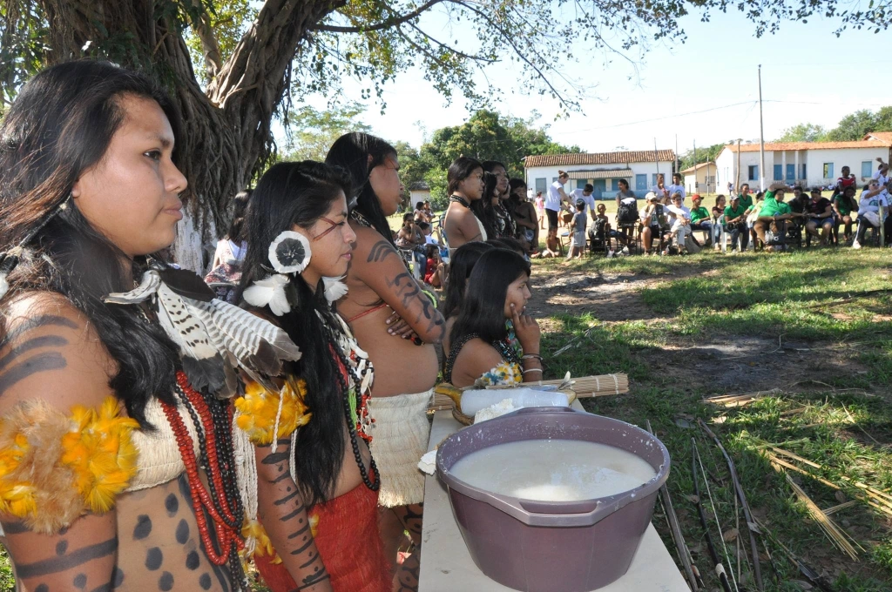
Apresentação cultural Caminhada da Natureza. Foto Alessandra Carvalho (2013).
A (ametá) saia tubular feito de fibras de tucum ou algodão, o bracelete de penugem, os colares que podem ser feitos de pequenos dentes de animais ou sementes de variadas cores.
As tradições das vestimentas são orgulho do povo Umutina. Foto Leocílio Boroponepá Filho.
Alunas em apresentações culturais. Foto Leocílio Boroponepá Filho.
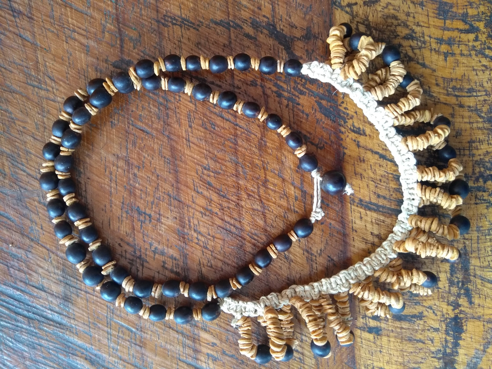
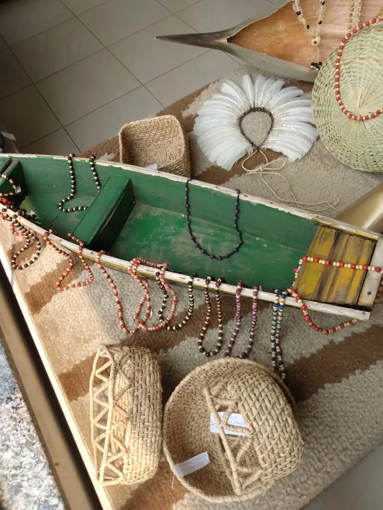
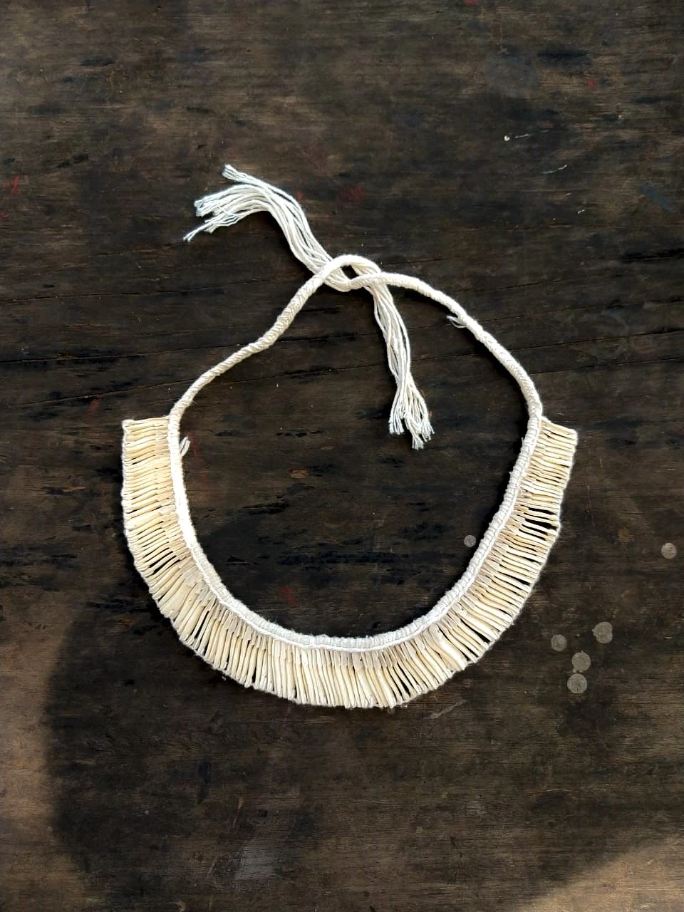
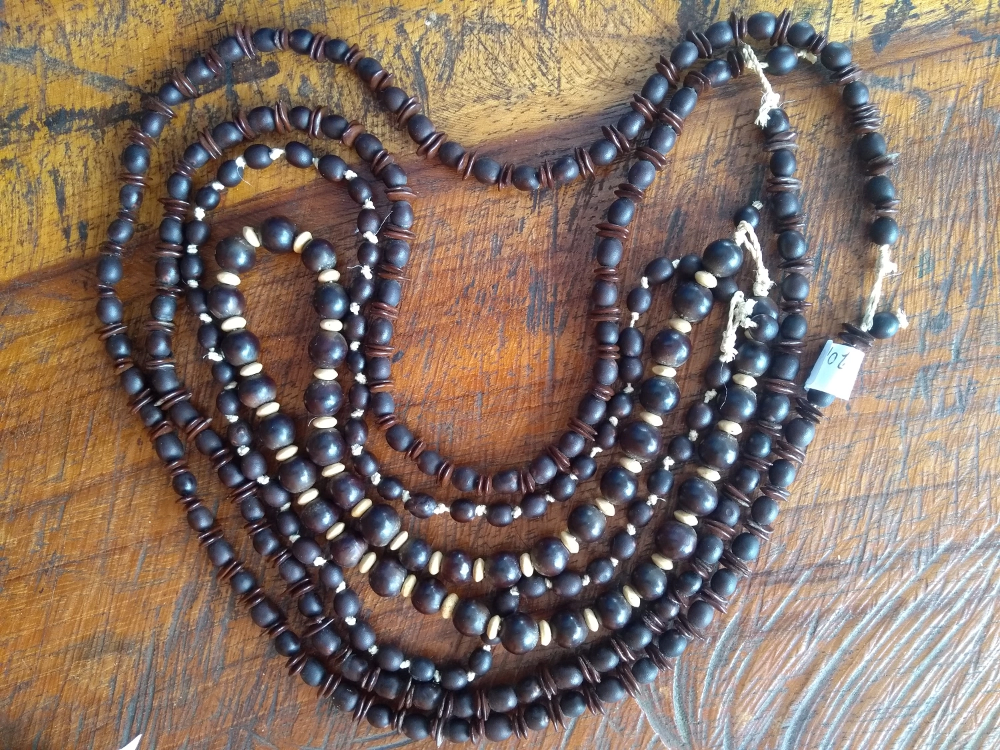
A pintura corporal masculina e feminina pode ser obtida da tinta de jenipapo, urucum ou ainda argila branca. As masculinas simbolizam o tamanduá-bandeira e peixes como a cachara e o pintado.
Cada pintura corporal tem significado próprio. Foto João Mário Adrião.
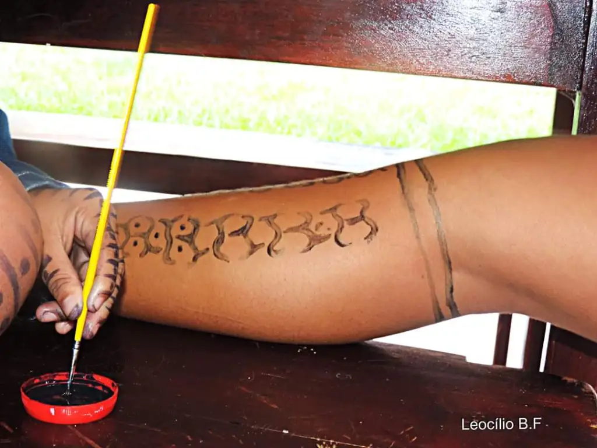
Pintura remetem aos animais e peixes da Terra Umutina. Foto Leocílio Boroponepá Filho
A pintura corporal é usada tanto em rituais, apresentações como na caça e outras atividades tradicionais. Fotos João Mário Arruda Adrião.
Elas têm como objetivo ressaltar os músculos do dançarino. As pinturas corporais femininas simbolizam as formas de couro de cobras e também o peixe cachara.
Ritual Umutina em apresentação cultural. Foto Alessandra Carvalho(2011).
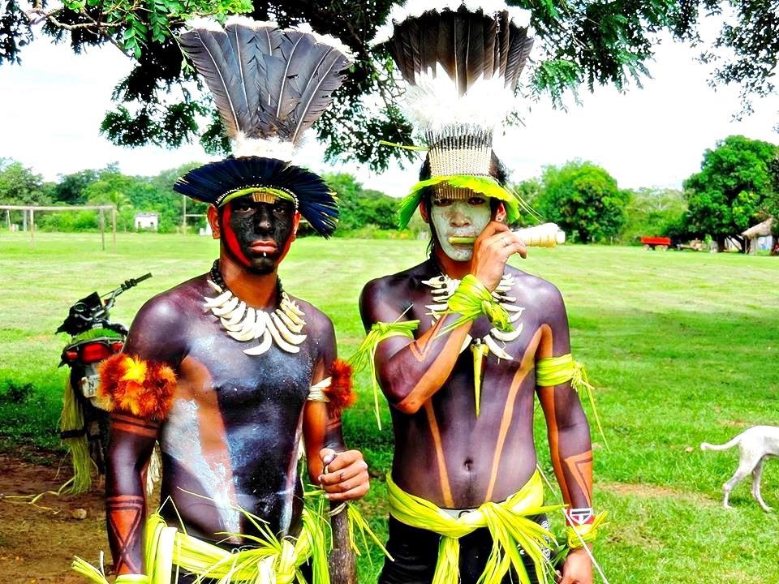
A pintura corporal masculina destaca sua musculatura. Foto Edivando Zakimayer.
Os instrumentos musicais são os chocalhos de pé e de mão, flautas de taboca, buriti, de chifre de boi. Os objetos artísticos, ainda são representados por cestarias feitos de diversas matérias-primas como tabocas, palhas de babaçu, talas de buriti, cipós.
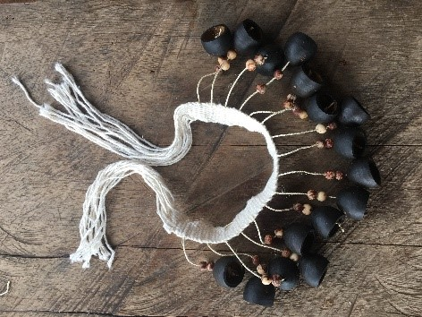
Chocalhos.
Tecer as palhas é uma arte milenar.
O artesanato indígena Umutina retrata também sua identidade. Fotos Alessandra Carvalho.
*Texto: Marcio Monzilar Corezomaé – Professor/Mestre da Escola Estadual Julá Paré, 2019
III – A PRESENÇA DA EDUCAÇÃO ESCOLAR OFICIAL ENTRE O POVO BALATIPONÉ-UMUTINA.
Cada vez mais a identidade Balatiponé-Umutina e a manutenção dos conhecimentos tradicionais vem sido fortalecidos na escola Julá Paré. É a permanência e a vivência desses conhecimentos que garantem os direitos historicamente conquistados pela etnia, entre eles, o mais importante: o direito ao Território.
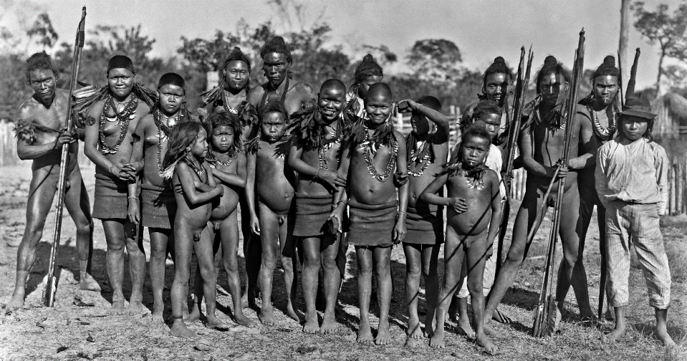
Foto de José Louro restaurada por Mário Friedlander.
A educação escolar oficial entre o povo Balatiponé-Umutina divide-se em dois momentos históricos. O primeiro acontece a partir do contato da etnia com a equipe de Rondon, que depois do processo de pacificação da etnia se instalou no Posto Fraternidade Umutina a primeira escola, onde a educação ofertada nesse período, acabou tentando apagar a identidade indígena, proibindo os costumes e a língua nesse espaço, tendo professores não índios. Muitos estudantes desistiam.
Pintura na parede do antigo prédio do SPI. Foto *Comunidade Indígena Umutina*
Professor Márcio com alunos da E.E. Julá Paré. Foto *Comunidade Indígena Umutina*
O segundo momento começa no final da década de 1980, quando os primeiros professores indígenas começam a assumir a sala de aula, incentivando os anciões a passarem seus conhecimentos aos alunos.
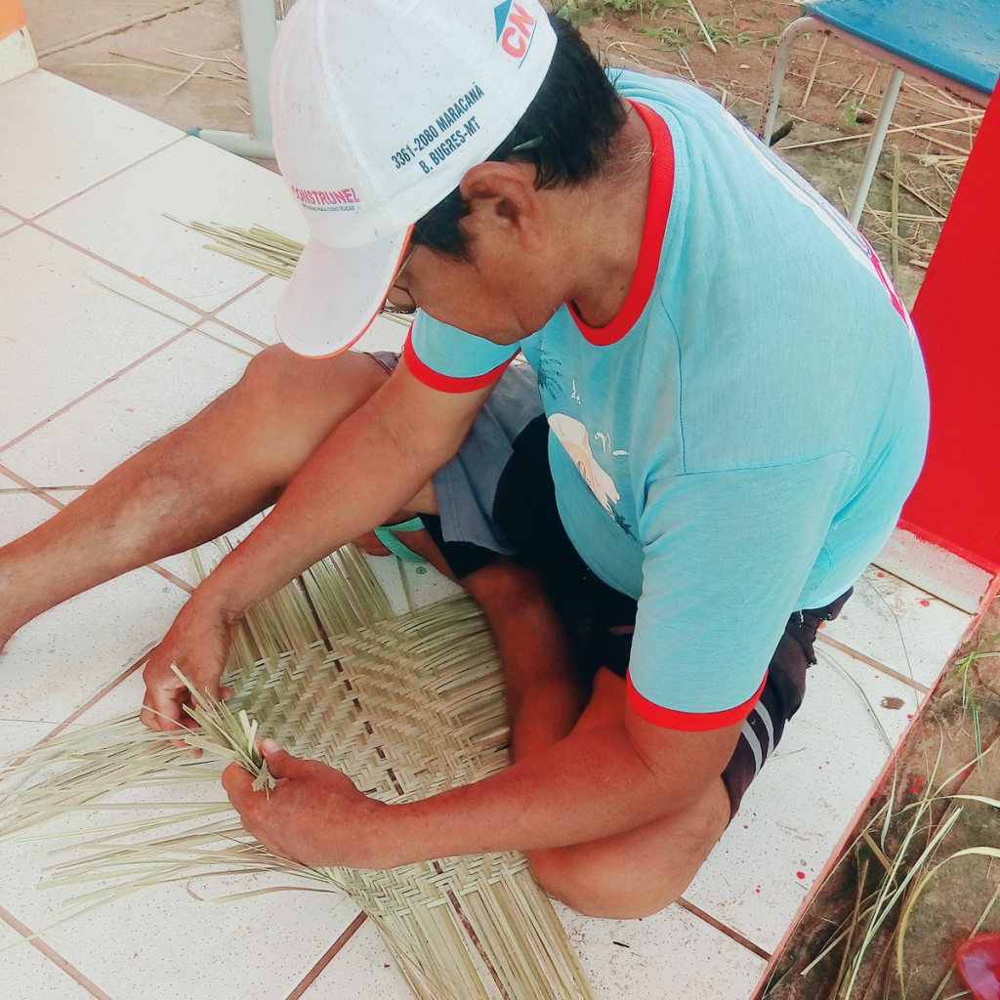
Os anciãos passam a compartilhar conhecimento por meio de escola. Foto Foto *Comunidade Indígena Umutina*
A língua materna passa ser usada como currículo escolar. Foto *Comunidade Indígena Umutina*
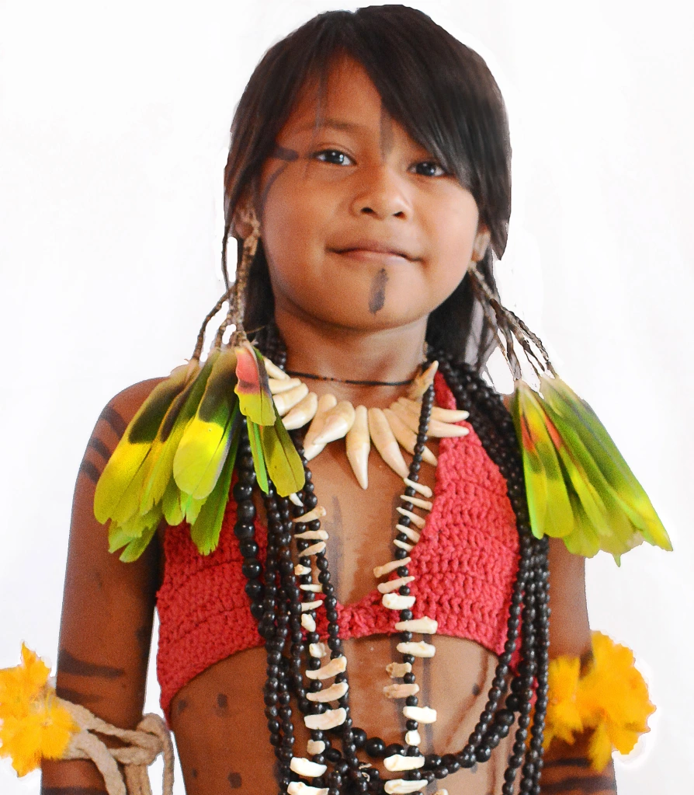
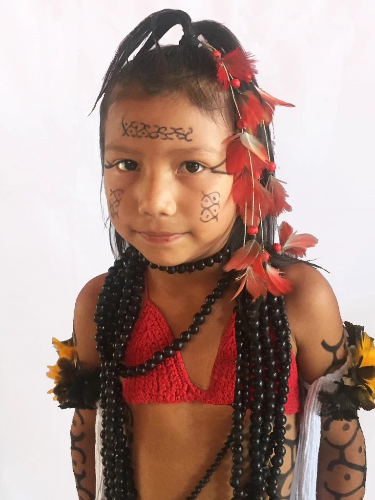
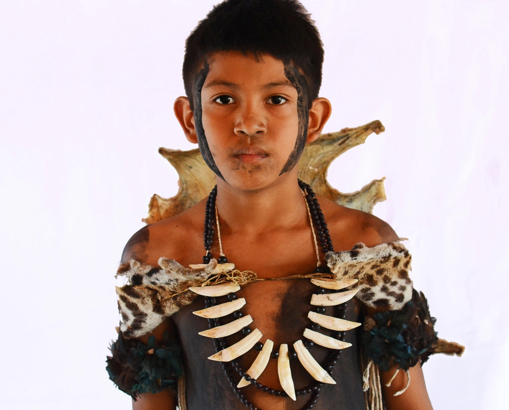
Em cerimônias na E. E. Julá Paré o traje Umutina é usado com orgulho. Foto Alessandra Carvalho (2019).
Com o passar do tempo o número de alunos e professores aumentaram, e as lideranças reivindicaram uma nova escola. A escola que tinha o nome de Otaviano Calmon, passou a se denominar “Julá Paré”. Também foi fundamental para alavancar o processo de ressignificação cultural da etnia, a presença dos professores Balatiponé-Umutina no Projeto 3º Grau Indígena (curso de formação de professores a nível superior) da Unemat.
Apresentações culturais na escola faz parte do currículo e das atividades comemorativa. Foto Alessandra Carvalho (2019).
Formatura Umutina. Foto Leocílo Boroponepá Filho.
Cada vez mais a identidade Balatiponé-Umutina e a manutenção dos conhecimentos tradicionais vem sido fortalecidos na escola Julá Paré.
É a permanência e a vivência desses conhecimentos que garantem os direitos historicamente conquistados pela etnia, entre eles, o mais importante: o direito ao Território.
A escola E. E. Julá Paré integra a grade disciplinar do Ministério da Educação com a cultura indígena. Foto *Comunidade Indígena Umutina*.
Jogos Indígenas na T.I. Chiquitano – Aldeia Acorizal. Foto Alessandra Carvalho (2017)
Em SAIBA MAIS assista o vídeo: A literatura indígena de Ariabo Kezo. Por Literatura Indígena Brasileira.
*Texto: Marcio Monzilar Corezomaé – Professor/Mestre da Escola Estadual Julá Paré, 2019.
V – PROJETANDO O FUTURO: NOVAS ALDEIAS, NOVOS LOCAIS DE MORADIA
No passado, diversas famílias Balatiponé-Umutina tinham os seus locais de moradias distantes da aldeia Umutina, onde praticavam a lavoura e cultivavam diversos produtos agrícolas como: banana, arroz, mandioca, milho, batatas. Com o passar do tempo, muitos desses locais foram abandonados.
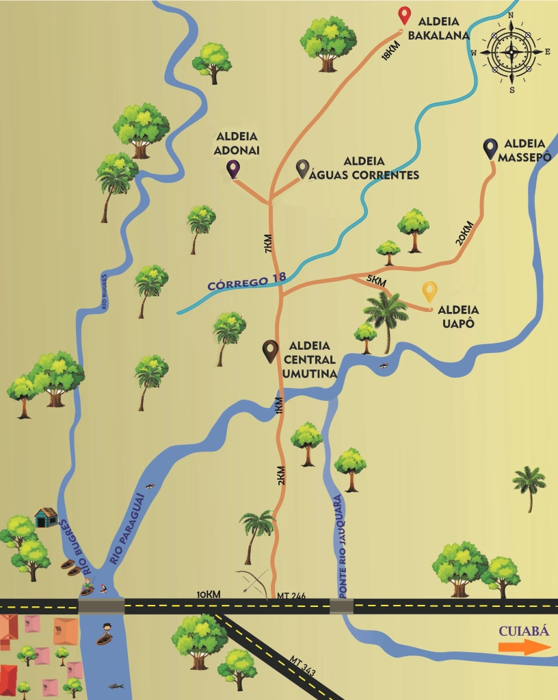
Mapa representativo das aldeias homologadas. Ilustração Larissa Borges.
Atualmente, a população Balatiponé-Umutina tem crescido gradativamente, e uma das maiores preocupações das lideranças tem sido a ocupação e a proteção territorial, bem como a sustentabilidade econômica. A partir desse entendimento, muitas aldeias foram criadas sendo elas as seguintes:
*Texto: Marcio Monzilar Corezomaé – Professor/Mestre da Escola Estadual Julá Paré, 2019.
Aldeia Central Balatiponé- Umutina
A aldeia central Balatiponé-Umutina está localizada a cerca de 1 km do porto do Rio Paraguai no Território Indígena Umutina. É aonde se encontra a maioria da população, cerca de 280 indígenas. Também é onde encontra-se as principais estruturas e equipamentos de apoio para toda o território, como Posto de Saúde, Escola Estatual Julá Paré e outras instituições.
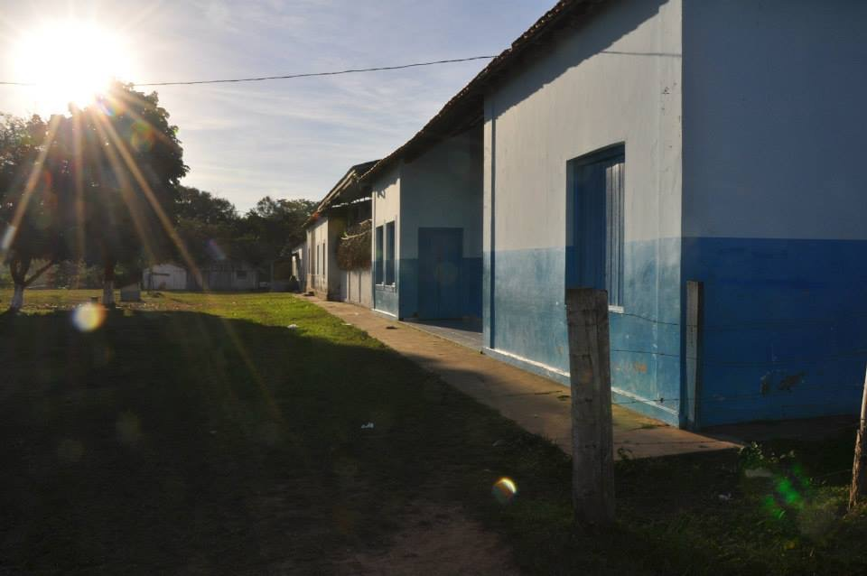
Posto de Saúde. Foto Alessandra Carvalho.
Foi na aldeia central que se implantou a central do Posto Proteção Indígena, em que os indígenas construíram a sede do Posto e as 11 casas para a comissão, arquiteturas essas tombadas como Patrimônio Histórico e Cultural do Estado de Mato Grosso. A casa da Administração da Funai da Epóca da Comissão Rondon hoje é utilizada para abrigo de visitantes e depósito de materiais. Mas busca-se por meio de parcerias a implantação do Museu Umutina.
Antigo Posto da Comissão Rondon. Foto * Comunidade Indígena Umutina*
Em cerimônias na E. E. Julá Paré o traje Umutina é usado com orgulho. Foto Alessandra Carvalho (2019).
Atualmente o Cacique eleito é o jovem Luciel Boroponepa, em que em entrevista para a Casa Borges, destacou que sua missão será exclusiva a dedicar-se pelo desenvolvimento da Aldeia como de todo o território.
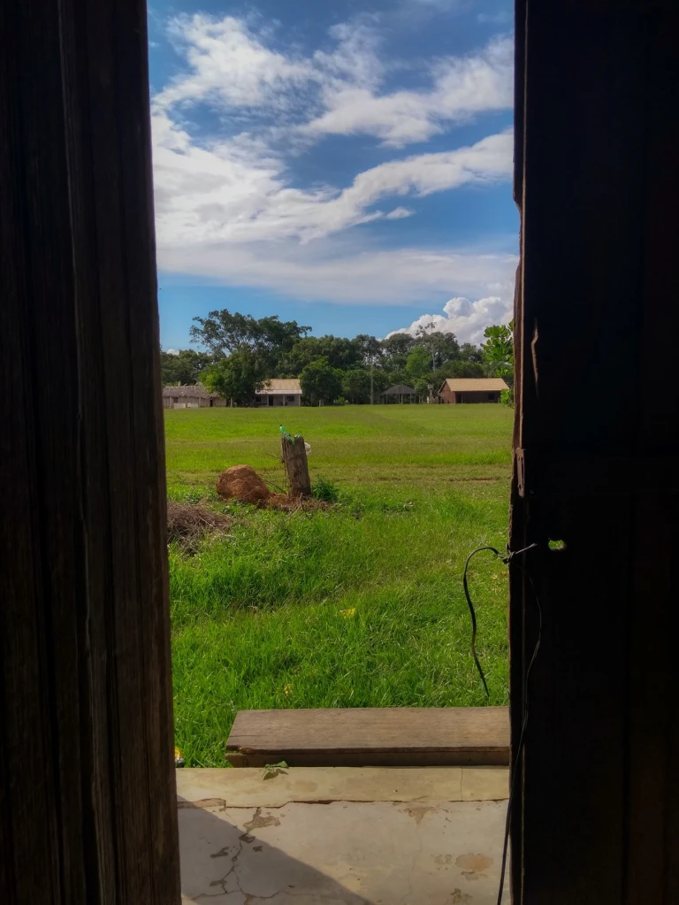
O olhar para o novo. Foto Alessandra Carvalho.
O campo central, aonde ocorrem os principais eventos da comunidade. Foto Alessandra Carvalho.
A juventude do território conservam a tradição cultural, bem como a integração e preservação do Território. Foto Alessandra Carvalho.
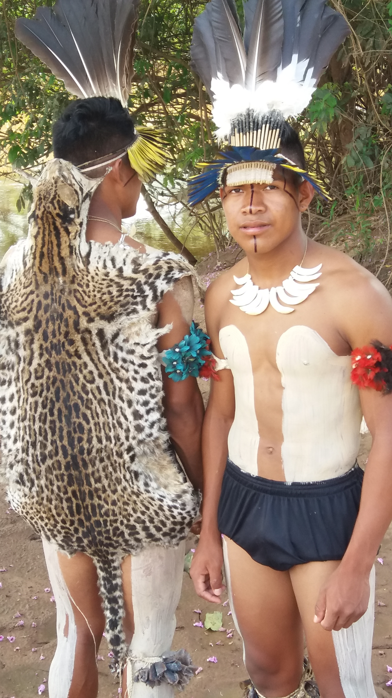
Adornos, pinturas, acessórios, bens materiais e imateriais que são preservados. Foto Alessandra Carvalho.
11 Casas Históricas construídas pela Comissão Rondon na Terra Indígena Umutina são tombadas como Patrimônio Histórico e Artístico Estadual pela Portaria N° 036/SEC/2008, de 29/10/2008.
As construções são consideradas parte importante da memória matogrossense e de relevante valor histórico. As Casas foram construídas pela Comissão Rondon entre os anos de 1943 a 1945, para a implantação das linhas telegráficas da região.
Ao todo são delimitadas 4.379m2 como área de preservação e proteção cultural e ambiental, para tombamento e entorno, o que abrange a totalidade da área da aldeia Umutina – Balotiponé.
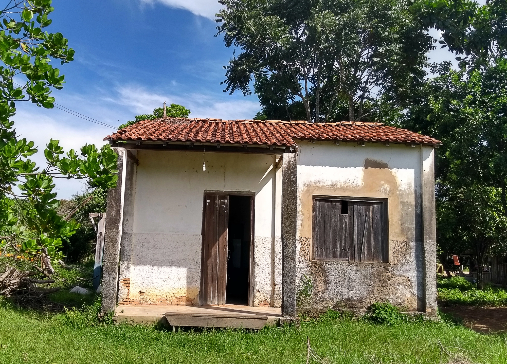
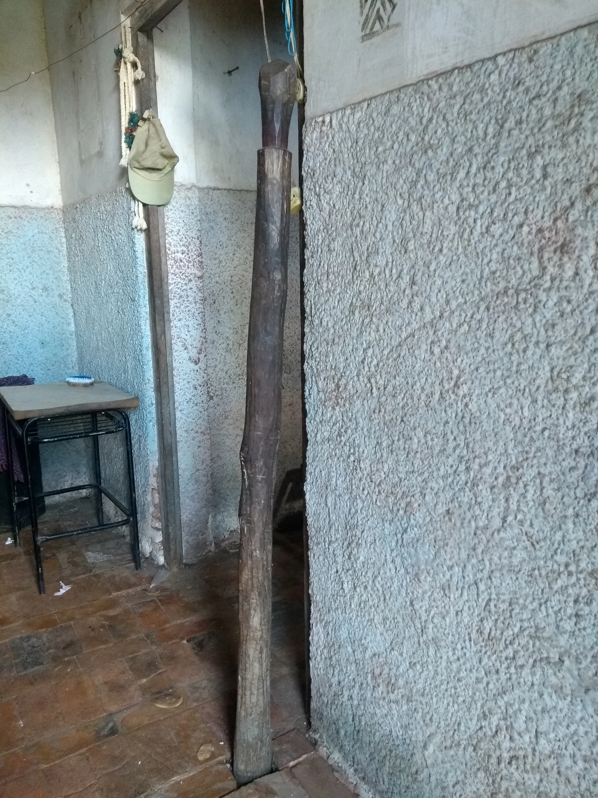
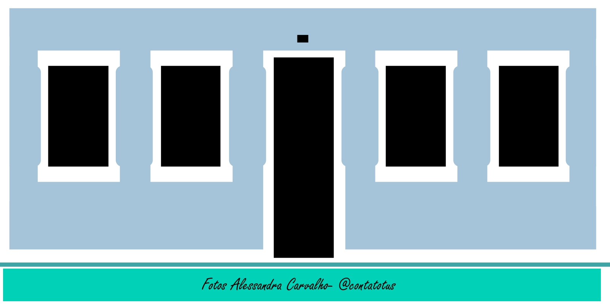
Vale destacar que desde o tombamento pouco fora feito para preservação, conservação e manutenção dessas casas. O projeto de Rondon junto à população indígena era de pacificá-los, criando um novo aldeamento, e colocando-os aos cuidados da Comissão. Ficando igualmente protegido de qualquer ação que lhe impeça ou reduza a visibilidade ou paisagem estética e ambiental
*Texto: Alessandra Ribeiro de Carvalho – Especialista e Turismóloga de Barra do Bugres, MT (2020).
Aldeia Massepô - – localiza-se a 20 km da aldeia Umutina (aldeia Central), fica ás margens do rio Paraguai. O cacique é o Sr. José Felisberto Kupodonepá. Nesta aldeia desenvolve-se a agricultura (plantio de banana, arroz, pomar, entre outros).
A Agricultura por meio do Sistema da Economia Solidária é uma realidade na Aldeia Massepô: *Foto Comunidade Indígena Umutina.
Aldeia Bakalana - – Localiza-se a 18 km da aldeia Umutina, fica próxima à cidade de Denise/MT. O cacique é o Sr. Sebastião Manepá Ipaqueri. A aldeia Bakalana desenvolve agricultura de subsistência. Ainda preserva a cultura Balotiponé, como a Caça.
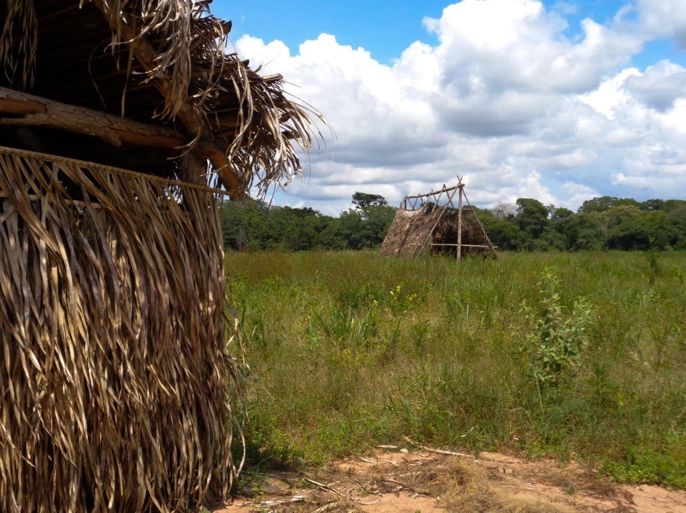
Casas feitas de madeira e de palha de Babaçu ou buriti são comuns na Aldeia.
Interação Social e Agricultura de base familiar são base das comunidades tradicionais. *Foto Comunidade Indígena Umutina* e João Arruda Adrião.
A caça é uma pratica indígena milenar, tanto pra subsistência como para proteção da lavouras, da pecuária e das pessoas. Foto Alessandra Carvalho.
A aldeia busca projetos alternativos para desenvolvimento econômico da comunidade. Foto Alessandra Carvalho.
Aldeia Águas Correntes - – Localiza-se aproximadamente a 7 km da aldeia Umutina, fica próxima ao córrego Dezoito. O cacique é Sr. Sandriano Monzilar Parikokoreu. A aldeia Águas Correntes desenvolve a agricultura e fabricação de artesanato.
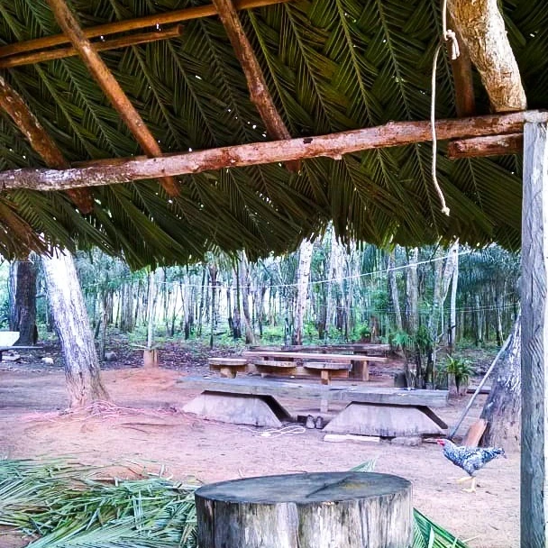
Fotos da Aldeia Águas Correntes *Comunidade Indígena Umutina*.
Dona Sebastina Uapodenopá deixou um legado cultural imenso do tecer a palha para o território. Visto a pandemia da Covid 19 foi a primeira vítima em 2020. Foto Alessandra Carvalho.
Aldeia Adônai - – Localiza-se aproximadamente a 7 km da aldeia Umutina. O cacique é o Sr. Cacildo Amajunepá. A aldeia Adônai desenvolve agricultura e criação de bovinos.
A cooperação entre a aldeia é uma forma de desenvolver a agricultura e outras atividades locais. Foto *Comunidade Indígena Umutina*.
Aldeia Uapô - – Localiza-se aproximadamente a 5 km da aldeia Umutina. O cacique é o Sr. Dionísio Uapodonepá. Desenvolve agricultura nesta aldeia.
A Aldeia Uapô, assim como as outras aldeias, mais como alternativa prioritária o Turismo como meio desenvolvimento econômico, além de cultural e forma de preservação ambiental. Há pouco mais de dois anos vem seguindo o decreto da Funai para elaboração do Plano de visitação, o Manual de Boas Condutas do Turista na Terra Indígena e o Plano de Negócio.
Entre as modalidades busca o Etnoturismo integrado ao Ecoturismo, como atividade principal a observação de aves e animais silvestres. *
*Alessandra Ribeiro de Carvalho, 2020.
Foto: Casa do Cacique. Foto Alessandra Ribeiro de Carvalho (2020).
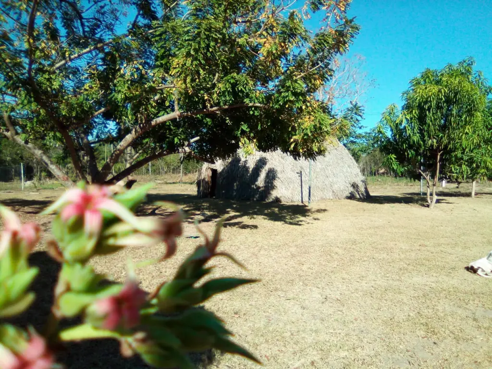
Família Uapô. Foto *Comunidade Indígena Umutina*
Vista aérea Aldeia Uapô. Foto Anderson Portilho Silva.
Outras aldeias em processo de abertura:
Cachoeirinha - Fica aproximadamente a 12 km da aldeia. Umutina. O responsável por esta localidade é Sr. Leomar Uapodonepá Boroponepá. Neste local desenvolve-se agricultura e pesca.
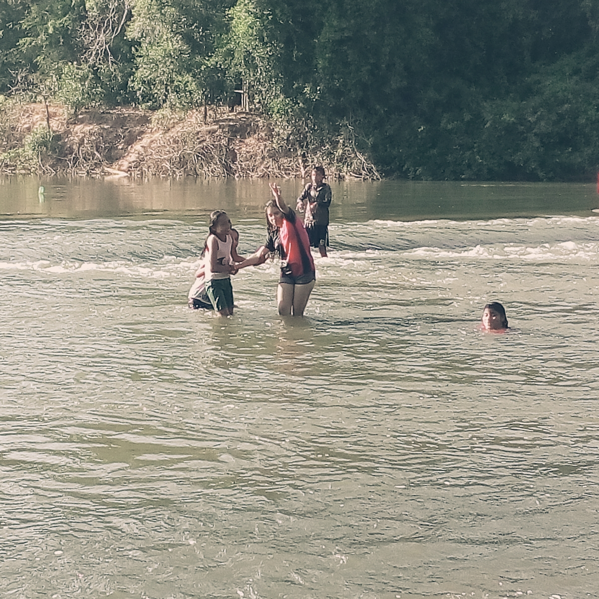
Interação total coo a rio. Foto*Comunidade Indíena Umutina*
Alto Retiro - Fica aproximadamente a 10 km da aldeia Umutina. A responsável por esta localidade é a Sra. Ducineia Tan Huare.
Majunepá - Fica aproximadamente a 10 km da aldeia Umutina. O responsável pela localidade é o Sr. Pedro Amajunepá. Neste local trabalha-se com agricultura.
Corezomaé - Fica aproximadamente a 3 km da aldeia Umutina. O responsável pelo local é o Sr. Heleno Corezomaé. Localiza-se as margens do rio Pararguai onde desenvolve-se agricultura.
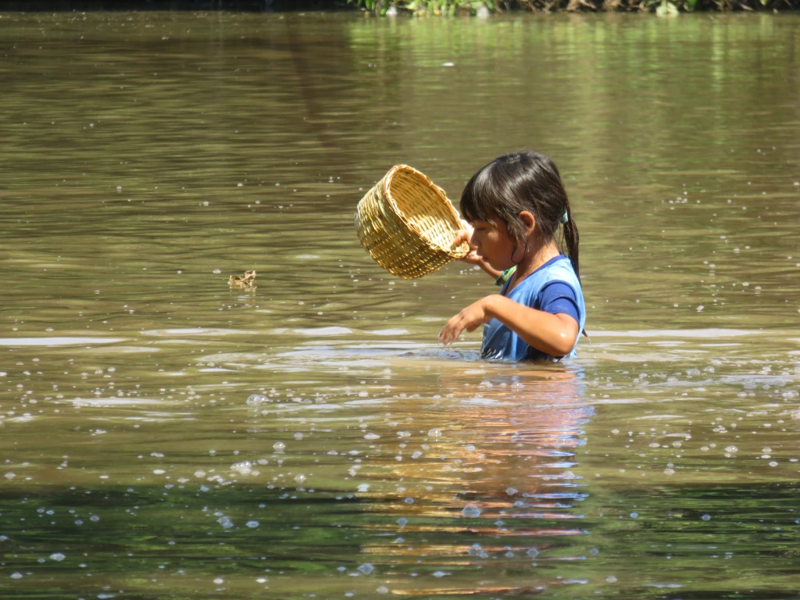
O rio Paraguai é o principal rio da comunidade, aonde retiram tanto peixe como utiliza a água pra maioria as suas necessidade. Foto João Mário arruda Adrião.
Acorizal - Fica aproximadamente a 10 km da aldeia Umutina. O responsável pelo local é o Sr. Jones Amajunepá onde trabalha-se com agricultura.
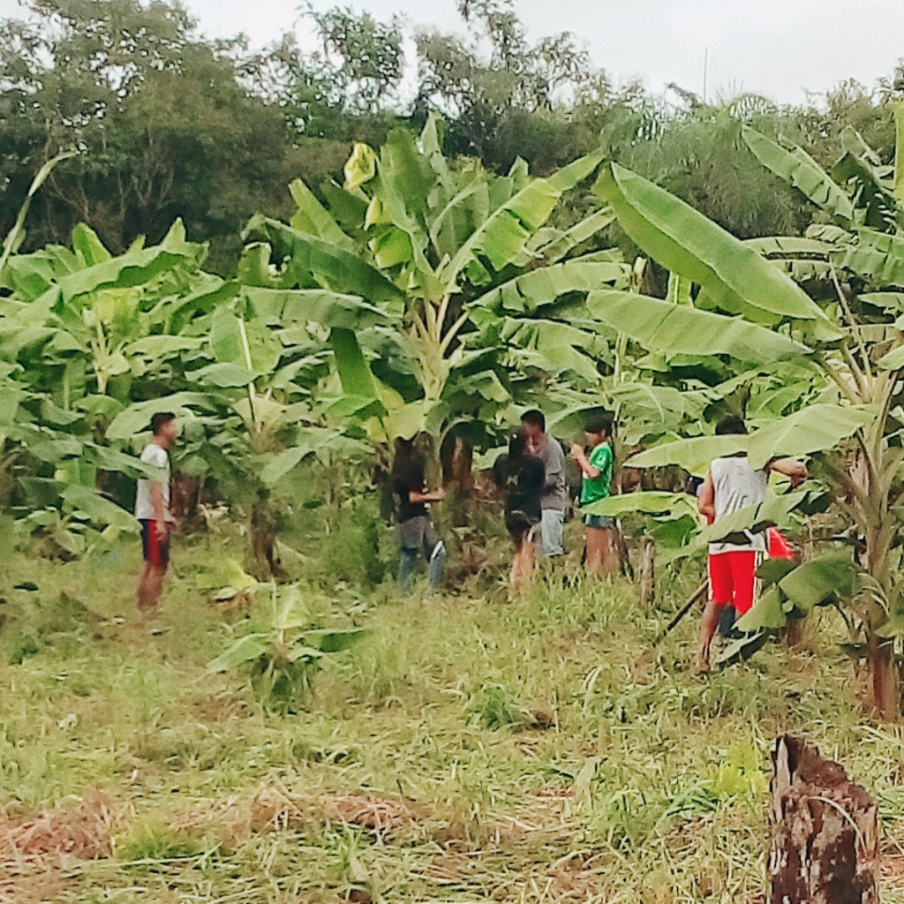
Em quase todo território o plantio da banana, mandioca e milho é cultivado pelo povo Balatiponé. Foto *Comunidade Indígena Umutina*
Rio Bugres - Fica aproximadamente a 6 km da aldeia Umutina. o responsável pelo local é o Sr. Filadelfo de Oliveira Neto. Localiza-se as margens do Rio Bugres.
A pesca é uma atividade praticada por todos. Foto João Mário Arruda Adrião.
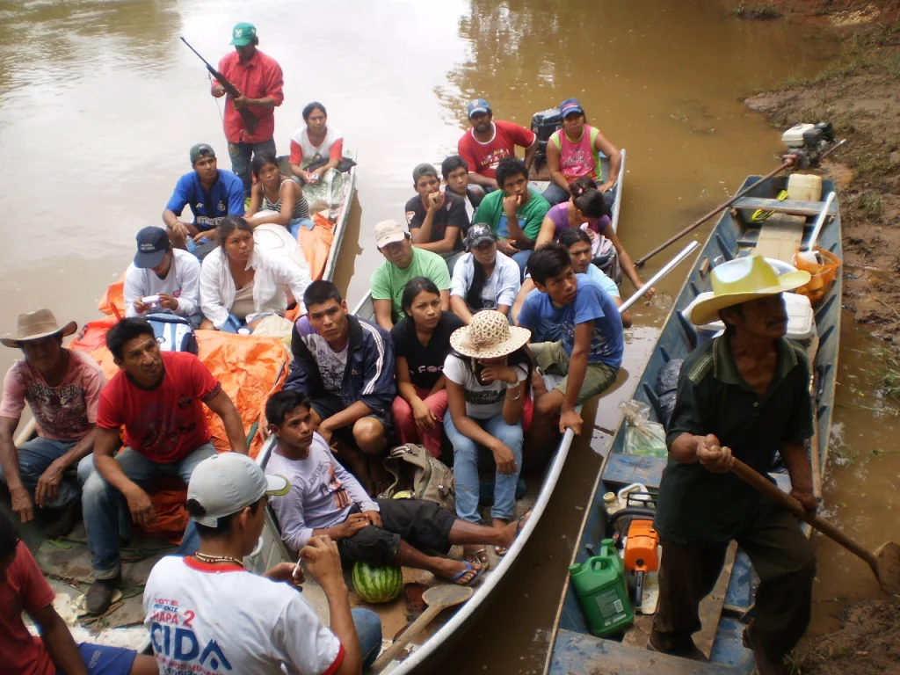
Por meio de barcos e canoas são feitos os transportes das pessoas e de boa parte das mercadorias que entra e sai na aldeia. Foto *Comunidade Indígena Umutina*
Boropô Fica aproximadamente a 3 km da aldeia Umutina. O responsável pelo local é a Sra. Edna Monzilar. Localiza-se as margens do rio Paraguai onde trabalha-se com agricultura.
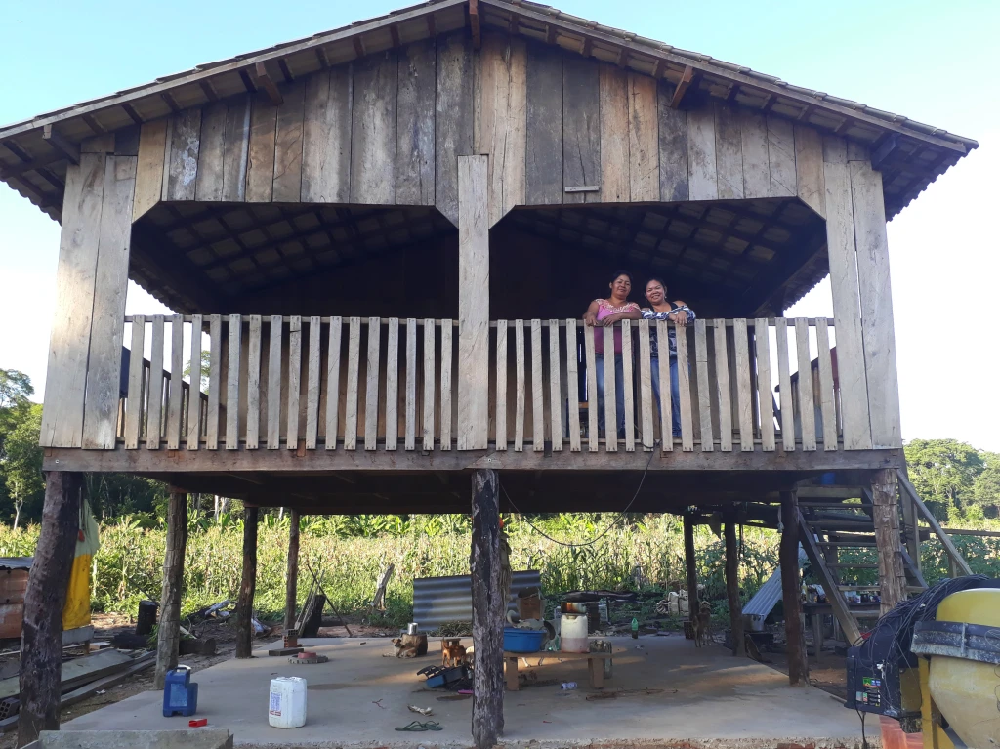
Barreiro Fica aproximadamente 4 km da aldeia Umutina. O responsável pelo local é o Sr. Valdinei Monzilar. Localiza-se as margens do rio Paraguai. Neste local trabalha-se com agricultura.
Barreiro encontra-se nas proximidades do rio Paraguai. Foto *Comunidade Indígena Umutina*
Katamã Fica aproximadamente a 07 km da aldeia Umutina. O responsável pelo local é o Sr. Luiz Fernando Calomezoré. Localiza-se as margens do rio Paraguai. Neste local desenvolve-se agricultura.
Atualmente a economia da etnia é baseada na agricultura, fabricação de artesanatos, criação de animais, pesca e caça. Ainda, tem-se os funcionários públicos do setor da educação e da saúde e os aposentados. Nas novas aldeias tem-se buscado novas formas de sustentabilidade econômica que respeitem e preservem os recursos naturais do Território.
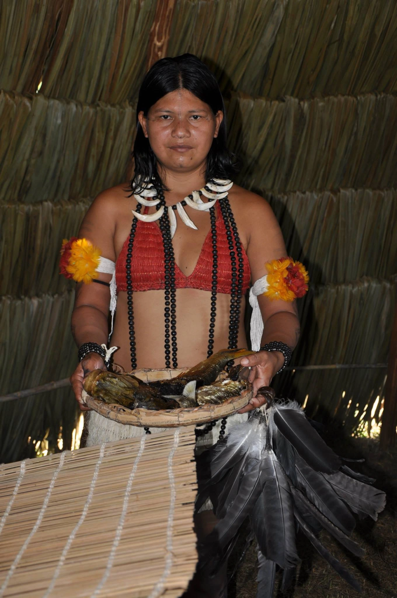
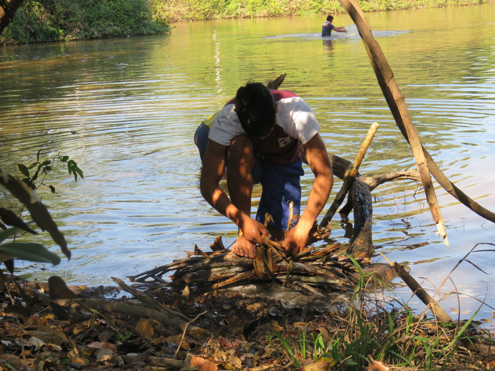
A pesca é o meio de maior subsistência da comunidade, principalmente para alimento. Foto Alessandra Carvalho e *Comunidade Indígena Umutina*
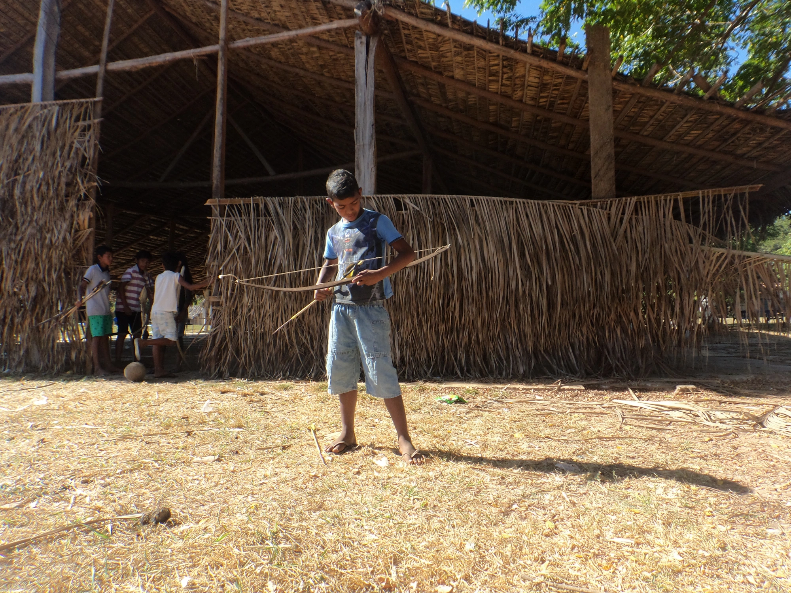
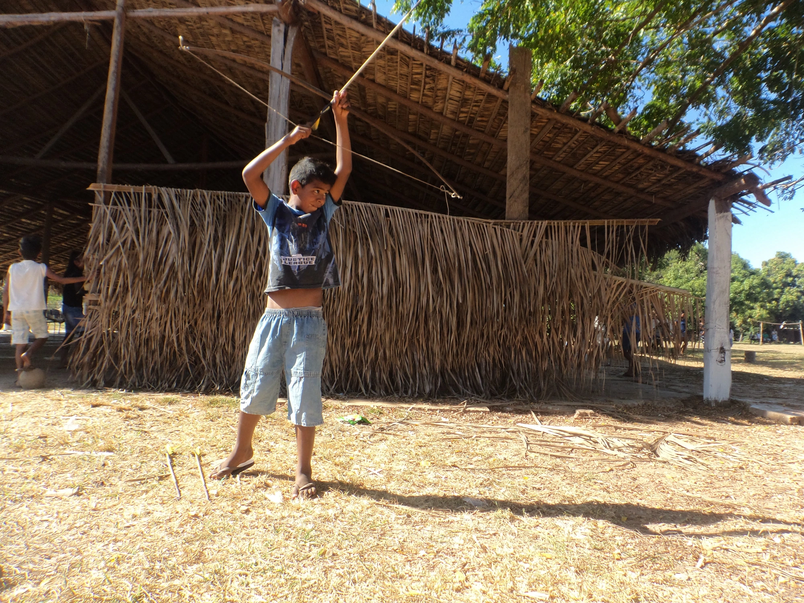
Umutina. Foto Mario Friedlander Projeto Paisagens de Rondon 2016.
*Texto Adaptado:Marcio Monzilar Corezomaé – Professor/Mestre da Escola Estadual Julá Paré, 2019.
COREZOMAÉ, Lennon; GONÇALVES JUNIOR, Luiz; LEMOS, Fábio. Etnomotricidade dos povos indígenas da aldeia Umutina: contribuições para a educação das relações étnico-raciais. EDUCERE, 2013. Disponível em: https://educere.bruc.com.br/arquivo/pdf2013/9813_5197.pdf. Acesso em: 01 de out. de 2020.
Marcio Monzilar Corezomaé – Professor/ Mestre da na Escola Estadual Julá Paré
Edina Boroponepá Monzilar – Professora na Escola Estadual Julá Paré
Tainara Toriká kiri – Bibliotecária
Leocílio Boroponepá Corezomaé Filho
Fonte de Informação Bibliográfica:
Marcio Monzilar Corezomaé – Professor/Mestre da Escola Estadual Julá Paré, 2019. Exposição Balatiponé-Umutina: Passado – Presente – Futuro.
MAlessandra Ribeiro de Carvalho – Colaboradora: Especialista em Ecoturismo e Turismóloga Municipal de Barra do Bugres, MT.
Escola Estadual Julá Paré; Liderança e Comunidade do Território indígena Balatiponé/Umutina em entrevistas e vivências.
Edição, produção e assessoria:
Alessandra Ribeiro de Carvalho – Turismóloga e Especialista em Ecoturismo Municipal de Barra do Bugres, MT – Assessoria do projeto de Extensão Museu Casa Borges.
Larissa Borges Lourenço – Arquiteta e Urbanista; Bolsista do projeto de Extensão.
Luana Arantes Quida Borges – Acadêmica do curdo de Licenciatura em Matemática da Unemat Campus de Barra do Bugres; Voluntária do projeto de extensão.
Kathleen Paula Dourado – Acadêmica do curdo de Arquitetura da Unemat Campus de Barra do Bugrrs; Voluntária do projeto de extensão.
Vitor Manoel da Silva – Acadêmico do curso de Arquitetura e Urbanismo da Unemat campus Barra do Bugres; Voluntário do projeto de extensão.
Viviane Dourado – Acadêmica do curso de Arquitetura e Urbanismo da Unemat campus Barra do Bugres; Bolsista do projeto de Extensão
João Mário Arruda Adrião – Mestre e Professor no curso de Arquitetura e Urbanismo da Universidade do Estado de Mato Grosso (Unemat) campus universitário Renê Barbour, Barra do Bugres – MT. Coordenador do Projeto de Extensão do Museu Casa Borges.
Principais Fotografias: Umutina-Balotiponé Passado – Presente- Futuro
A ordem a seguir são da Exposição Presencial que foi adaptada para o virtual (outras fotos foram inseridas).
Foto 01 – Interior da oca tradicional Balatiponé/Umutina na aldeia Uapo.
Jéssica Apodonepá – Ano de 2019
Foto 01 – Interior da oca tradicional Balatiponé/Umutina na aldeia Uapo. Jéssica Apodonepá – Ano de 2019
Foto 02 – Palha de buriti usada para cobrir as casas Balatiponé/Umutina, aldeia Uapo. Jéssica Apodonepá – Ano de 2019
Foto 03 – Palha de babaçu usada para cobrir as casas Balatiponé/Umutina, aldeia Uapo. Jéssica Apodonepá – Ano de 2019
Foto 04 – Zári, casa de máscaras do povo Balatiponé/Umutina. João Mário Adrião – Ano de 2015
Foto 05 – Casa do povo Balatiponé/Umutina feita de pau-a-pique. João Mário Adrião – Ano de 2015
Foto 06 – Detalhe da cobertura de uma casa na aldeia Umutina. João Mário Adrião – Ano de 2015
Foto 07 – Pesca com timbó.
João Mário Adrião – Ano de 2015
Foto 08 – Foto 08 – Jogos indígenas: Tiro com arco. João Mário Adrião – Ano de 2015
Foto 09 – Foto 9 – Criança Balatiponé/Umutina adornado para apresentação cultural. João Mário Adrião – Ano de 2015
Foto 10 – Homem Balatiponé/Umutina amarrando o Rakikáno: cocar feito de penas. É usado nas cerimonias tradicionais pelos homens. João Mário Adrião – Ano de 2015
Foto 11 – Crianças Balatiponé/Umutina. Eliane Boroponepá – Ano de 2016
Foto 12 – Criança Balatiponé/Umutina na pesca do timbó. João Mário Adrião – Ano de 2015
Foto 13 – Criança Balatiponé/Umutina na pesca do timbó. João Mário Adrião – Ano de 2015
Foto 14 – Criança Balatiponé/Umutina na pesca do timbó. João Mário Adrião – Ano de 2015
Foto 15 –Cachoeira 2 na aldeia indígena Salto da mulher, povo Pareci, durante uma atividade escolar da aldeia Umutina. Márcio Monzilar – Ano de 2019
Foto 16 – “Grupo de índios Umutina. Alto rio Paraguai” José Louro (Rondon. Índios do Brasil. V1 1946 – Restaurada por: Mario Friedlander
Foto 17 – Cachoeira 1 na aldeia indígena Salto da mulher, povo Pareci, durante uma atividade escolar da aldeia Umutina. Márcio Monzilar – Ano de 2019
Foto 18 – “Índio Umutina. Os homens não cortam os cabelos. Alto Rio Paraguai” José Louro (Rondon. Índios do Brasil. V1 1946) – Restaurada por: Mario Friedlander
Foto 19 – “A mulher do chefe Umutina, do alto do rio Paraguai. Cabelos cortados à moda feminina dessa tribo” José Louro (Rondon. Índios do Brasil. V1 1946) Restaurada por: Mario Friedlander
Foto 20 – “Índio Umutina. Os homens não cortam os cabelos. Alto Rio Paraguai” José Louro (Rondon. Índios do Brasil. V1 1946) – Restaurada por: Mario Friedlander
Foto 21 – “Índio Umutina. Os homens não cortam os cabelos. Alto Rio Paraguai” José Louro (Rondon. Índios do Brasil. V1 1946) – Restaurada por: Mario Friedlander
Foto 22 – Antigo mapa da localização do povo Balatiponé/Umutina. Registro tirado de um livro.
Foto 23 – Mulher Balatiponé/Umutina José Louro (Rondon. Índios do Brasil. V1 1946) – Restaurada por: Mario Friedlander5
Foto 24 – Casa na aldeia Uapo, território Balatiponé/Umutina. João Mário Adrião – Ano de 2018
Foto 25 – Construção de Barracão na aldeia Águas Correntes, território Balatiponé/Umutina. Hélio Monzilar – Ano de 2019
Foto 26 – Barracão de palha de babaçu na aldeia Águas Correntes, território Balatiponé/Umutina Hélio Monzilar – Ano de 2019
Foto 27 – Ponta de flecha usada para pesca e caça. João Mário Adrião – Ano de 2016
Foto 28 – Detalhe das penas enfeitando a flecha. João Mário Adrião – Ano de 2016
Foto 29 – Jogos indígenas na Aldeia Umutina, cabo de guerra. João Mário Adrião – Ano de 2016
Foto 30 – Criança Balatiponé/Umutina com seus trajes. João Mário Adrião – Ano de 2016
Foto 31 – Aula de campo com os alunos do 3 ano da Escola Jula Paré. Eliane M. Boroponepá – Ano de 2010
Foto 32 – Interior da Escola Municipal da aldeia Massepô. Rosiney Amajunepá – Ano de 2019
Foto 33 – Moradia na aldeia Bakalana, território Balatiponé/Umutina. Itaiane M. I. Quezo – Ano de 2019
Foto 34 – Margem do rio Paraguai, na aldeia Katamã, território indígena Balatiponé/Umutina. Everton Corezomaé – Ano de 2019
Foto 35 – Travessia do rio Paraguai – chegada na aldeia Umutina. João Mário Adrião – Ano de 2017
Foto 36 – Escola Municipal na aldeia Massepô, extensão da escola Jula Paré. Rosiney Amajunepá – Ano de 2019
Foto 37 – Mulheres Balatiponé/Umutina.
Sheyla Tahenna Amajunepá – Ano de 2016
Foto 38 – Beira do rio Paraguai, aldeia Katamã. Everton Corezomaé – Ano de 2019
Foto 39 – Jogos indígenas, cabo de guerra infantil, na aldeia Umutina. João Mário Adrião – Ano de 2016
Foto 40 – Criança Balatiponé/Umutina. João Mário Adrião – Ano de 2017
Foto 41 – Plantação de banana, roça cultivada pelos alunos e Professores da Escola Jula Paré. Márcio Monzilar Corezomaé – Ano de 2018
Foto 42 – Jogos indígenas, tiro com arco e flecha, na Aldeia Umutina. Márcio Monzilar Corezomaé – Ano de 2019
Foto 43 – Aula de campo na aldeia Bakalana. Márcio Monzilar Corezomaé – Ano de 2018
Foto 44 – Jogos indígenas, corrida masculina, na aldeia Umutina. Márcio Monzilar Corezomaé – Ano de 2018
Foto 45 – Jovens guerreiros Balatipponé/Umutina durante festividade cultural. Leocílio Boroponepá Corezomaé – Ano de 2018
Foto 46 – Retirada dos barcos do trator para descer o rio Paraguai durante aula de campo da escola Jula Paré. Eliane Monzilar Boroponepá – Ano de 2010
Foto 47 – Jogos indígenas, cabo de guerra infantil feminino, na aldeia Umutina. JMárcio Monzilar Corezomaé – Ano de 2019
Foto 48 – Visão central da aldeia Bakalana, território Balatiponé/Umutina. Itaiane M. I. Quezo – Ano de 2019
Foto 49 – Escola Municipal da aldeia Bakalana. Itaiane M. I. Quezo – Ano de 2019
Foto 50 – Jogos indígenas, cabo de guerra feminino, na aldeia Umutina. Márcio Monzilar Corezomaé – Ano de 2019
Foto 51 – Alunos da Escola Jula Paré. Leocílio Boroponepá Corezomaé – Ano de 2019
Foto 52 – Criança Balatiponé/Umutina adornado para apresentação cultural. Jéssica Apodonepá – Ano de 2018
Foto 53 – Vista central da aldeia Uapo, território Balatiponé/Umutina.
Foto 54 – Plantação de mandioca na aldeia Uapo. Jéssica Apodonepá – Ano de 2019
Foto 55 – Vista panorâmica da Aldeia Uapo. Anderson Portilho Silva – Ano de 2019
Foto: 56 – Moradores da aldeia Uapo em residência tradicional, a Oca. Jéssica Apodonepá – Ano de 2019
Foto 57 – Vista lateral da Escola Jula Paré. Laélcio Amajunepá – Ano de 2019
Foto 58 – Preparo do beijú, alimento tradicional do Povo Balatiponé/Umutina. Jairton Kupodonepá – Ano de 2019
Foto 60 – Jovem Balatiponé/Umutina durante jogos indígenas, tiro com arco e flecha. João Mário Adrião – Ano de 2018
Foto 61 – Criança Balatiponé/Umutina na pesca do timbó. João Mário Adrião – Ano de 2016
Foto 62 – Roça de toco cultivada pelos alunos e professores da escola Jula Paré. Jairton Kupodonepá – Ano de 2019
Foto 63 – Aula de campo na aldeia Cachoeirinha, território Balatiponé/Umutina. Márcio Monzilar Corezomaé – Ano de 2018
Foto 64 – Passeio escolar com os alunos e professores da escola Jula Paré. Márcio Monzilar Corezomaé – Ano de 2019
Foto 65 – Colheita de banana na roça de toco cultivada pelos alunos e professores da escola Jula Paré. Laélcio Amajunepá – Ano de 2019
Foto 66 – Criança Balatiponé/Umutina. Leocílio Boroponepá Corezomaé – Ano de 2016
Foto 67 – Aula de campo na aldeia Cachoeirinha, território Balatiponé/Umutina. Leocílio Boroponepá Corezomaé – Ano de 2018
Foto 68 – Crianças tomando banho de rio na futura aldeia Corezomaé, território Balatiponé/Umutina. Márcio Monzilar Corezomaé – Ano de 2018
Foto 69 – Família durante passeio na futura aldeia Corezomaé, território Balatiponé/Umutina. Márcio Monzilar Corezomaé – Ano de 2018
Foto 70 – Crianças Balatiponé/Umutina ás margens do rio Paraguai, na futura aldeia Corezomaé. Márcio Monzilar Corezomaé – Ano de 2018
Foto 71 – Senhor Benairdes, ensinando o trançado Balatiponé/Umutina para os alunos da escola Jula Paré durante a disciplina de Práticas Culturais. Márcio Monzilar Corezomaé – Ano de 2019
Foto 72 – Visita dos alunos à casa do ancião Virgílio Monzilar. Marileide Monzilar – Ano de 2019
Foto 73 – Trançado para a confecção de cestarias Balatiponé/Umutina. Márcio Monzilar Corezomaé – Ano de 2019
Foto 74 – Crianças Balatiponé/Umutina durante aula na escola Jula Paré Márcio Monzilar Corezomaé – Ano de 2019
Foto 75 – Pequeno córrego na aldeia Cachoeirinha, território Balatiponé/Umutina. Márcio Monzilar Corezomaé – Ano de 2018
Foto 76 – Aula de campo na aldeia Bakalana, território Balatiponé/Umutina. Márcio Monzilar Corezomaé – Ano de 2018
Foto 77 – Vista Frontal da antiga escola Otaviano Calmon, antiga escola da aldeia Umutina. Márcio Monzilar Corezomaé – Ano de 2019
Foto 78 – Vista frontal da Casa Grande, antiga construção feita para abrigar o chefe de Posto e sua família. Márcio Monzilar Corezomaé – Ano de 2019
Foto 79 – Crianças Balatiponé/Umutina trajados para apresentação cultural na escola Jula Paré. Márcio Monzilar Corezomaé – Ano de 2018
Foto 80 – Criança Balatiponé/Umutina com seu Arco e Flecha. João Mario Adrião – Ano de 2016
Foto 81- Criança Balatiponé/Umutina com seu Arco e Flecha. João Mario Adrião – Ano de 2016
Foto 82 – Jovens Balatiponé/Umutina durante apresentação Cultural. João Mario Adrião – Ano de 2016
Foto 83 - Criança Balatiponé/Umutina com seu Arco e Flecha. João Mario Adrião – Ano de 2016
Foto 84 - Aula de campo na aldeia Cachoeirinha, território Balatiponé/Umutina. Márcio Monzilar – Ano de 2018
Foto 85 - Jovens Balatiponé/Umutina durante apresentação cultural. Márcio Monzilar Corezomaé – Ano de 2019
Foto 86 – Jovens guerreiros Balatiponé/Umutina. João Mario Adrião – Ano de 2016
Foto 87- Casa na Aldeia Boropo, território Balatiponé/Umutina Eliane Monzilar Boroponepá – Ano de 2019
Foto 88- Estrada que leva até a Aldeia Boropo. Eliane Monzilar Boroponepá – Ano de 2019
Foto 89- Criança da Aldeia Uapo, território Balatiponé/Umutina. Jéssica Apodonepá – Ano de 2019
Foto 90 - Alunos da Escola Jula Paré, tirando muda de banana para novo plantio. Márcio Monzilar Corezomaé – Ano de 2019
Foto 91- Jogos indígenas na Aldeia Umutina, corrida infantil feminino. Márcio Monzilar Corezomaé – Ano de 2019
Foto 92- Criança Balatiponé/Umutina na pesca do timbó. João Mario Adrião – Ano de 2018
Foto 93- Moradia na Aldeia Boropo. Edgar Monzilar – Ano de 2019
Foto 94- Margens do Rio Paraguai, na Aldeia Barreiro Território Balatiponé/Umutina. Márcio Monzilar Corezomaé – Ano de 2018
Foto 95 – Margens do Rio Paraguai, na Aldeia Barreiro Território Balatiponé/Umutina. Márcio Monzilar Corezomaé – Ano de 2018
Foto 96 – Alunos da Escola Jula Paré, durante Oficina de Matemática. Márcio Monzilar Corezomaé – Ano de 2018
Foto 97 - Aluna da Escola Jula Paré participando da Oficina de Ciências Osvaldo Monzilar Corezomaé – Ano de 2018
Foto 98 - Pintura Corporal masculina do povo Balatiponé/Umutina. João Mario Adrião – Ano de 2016
Foto 99 - Fundos da antiga Escola Otaviano Calmon. Márcio Monzilar Corezomaé – Ano de 2019
Foto 100 - Vista lateral da casa grande. Márcio Monzilar Corezomaé – Ano de 2019
Foto 101 - Pintura na parede da Casa Grande. Márcio Monzilar Corezomaé – Ano de 2019
Foto 102 - Pintura na parede da Casa Grande. Márcio Monzilar Corezomaé – Ano de 2019
Foto 103 - Pintura na parede da Casa Grande. Márcio Monzilar Corezomaé – Ano de 2019
Foto 104 - Pintura na parede da Casa Grande. Márcio Monzilar Corezomaé – Ano de 2019
Foto 105 - Roça de toco na Aldeia Boropo. Eliane Monzilar Boroponepá – Ano de 2019
Foto 106- Criança da Aldeia Boropo colhendo batata doce. Eliane Monzilar Boroponepá – Ano de 2019
Foto 107- Rio Paraguai próximo a Aldeia Katamã. Sheila Tahenna Amajunepá – Ano de 2019
Foto 108- Criança Balatiponé/Umutina adornado para apresentação Cultural. João Mario Adrião – Ano de 2016
Foto 111- Pintura Corporal do Povo Balatiponé/Umutina. João Mário Adrião – Ano de 2016
Foto 112- Pescaria de timbó na baia grande, Aldeia Umutina. João Mário Adrião – Ano de 2016
Foto 113- Pintura Corporal masculina, do Povo Umutina. João Mário Adrião – Ano de 2016
*Fotos inseridas de Alessandra Carvalho para complementar o trabalho.
*Textos adaptados da Exposição Presencial na Casa Borges de 2019 e atualizados em 29 de setembro de 2019 pela equipe de Edição do projeto de Extensão da Universidade do Estado de Mato Grosso.